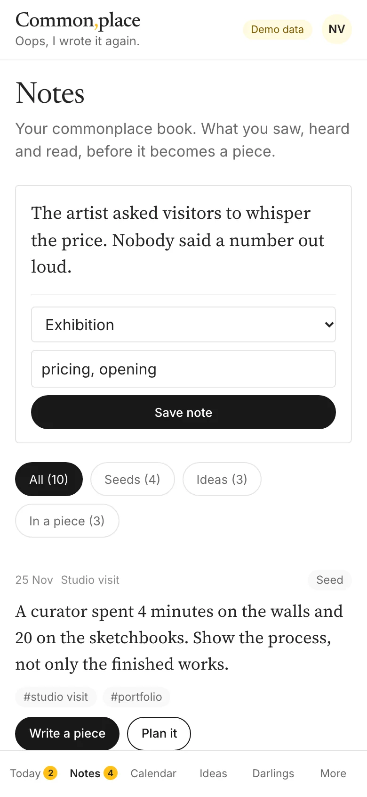

Irina MumrikovaProduct & UX DesignCase study Commonplace
Commonplace
A day with Nora
Commonplace is a workspace for writers who publish in several digital outlets. Instead of a tour of features, this case follows one writer through one day and shows what the product does at each moment, and why.
My role
Product and UX design, flow, information architecture, UI
Built with
Figma, AI-assisted coding (Claude Code)
Platform
Web app, phone and desktop
Status
Working prototype on invented data
The user
NV
Nora ValeWriter on contemporary art, curating and AI, Berlin
She runs a publication on Medium and writes for two digital magazines, three or four pieces a month next to curating and teaching. Her material comes from openings, studio visits and comments; her numbers live in four places, her plans in her head. Nora is a demo persona; the product, the screens and the flow are real.
The day is a loop
- Noticean opening, a comment
- Notea seed in Notes
- Ideachecked against what exists
- Plana date
- Write with AIbrief, fact check
- Publishonly on her word
- Indexone tap
- Measureevery morning
Her stepAIRuns on its own
What she needs
- When I start the daySee what needs me first, before I open five tabs.
- When I notice somethingKeep it in one place, so it can grow into a piece.
- When I choose the next topicEvidence that readers ask, and that I have not written it.
- When a plan slipsA calendar that tells me honestly.
In the app, phone


Everything on a yellow stage is the app itself. Writer, outlets, numbers, notes and quotes are invented.1 / 3